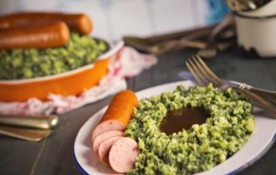

Recepten
Verwarm de rookworsten volgens de aanwijzingen op de verpakking.Kook ondertussen de aardappelen in een ruime pan in 16 min. gaar.
Kook de boerenkool in een andere pan in 14 min. gaar.
Giet de aardappelen en boerenkool af en doe samen in de ruime pan.
Verwarm de melk met de boter in een steelpan. Schenk bij de aardappelen en boerenkool en stamp tot een stamppot.
Breng op smaak met de mosterd, peper en zout. Verdeel over de borden en serveer met de rookworst.